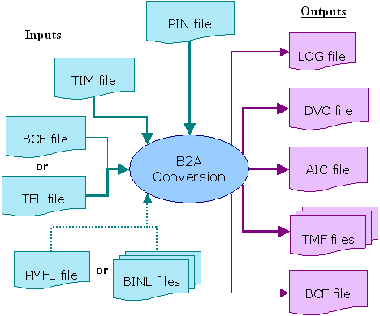
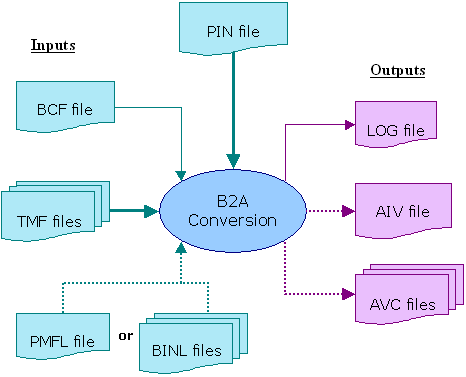

Interactive Mode
In interactive mode, ASCII timing and ASCII vectors are created in two different calls. This splitting allows you to modify the timing map files created by the first call before you use them for the vector retranslation, or to use timing map files not created by b2a. This is necessary if you want to apply a mapping that cannot be inferred from the SmarTest timing. For example, you may want to have different x-modes with different ASCII device cycles (see Creating Sequences from Several ASCII Device Cycles).
For the interactive retranslation, you first call b2a with the option -It. This has the effect that b2a will only create the ASCII timing, the timing map files, and a configuration file (*.bcf) which will serve as an input file for the vector retranslation. The configuration file defines, among other things, which timing map file is to be used for which label. This can be visualized as follows:

The b2a configuration file (*.bcf) and the testflow file (*.tfl) overlap in their information content. Normally only one of them will be passed to b2a. If both are specified, the configuration file has priority. The configuration file in its turn can be overridden by command line options. The vector setup can be specified in one global binary file or a pattern master file, but you can also pass multiple vector files to b2a.
The vector setup files are needed
- for the pattern names and types in the global configuration file (*.aic), and
- to determine which timing sets are activated in the sequencer program with a CTIM instruction.
A further option, which is not shown in the figure, is to specify a timing map file (*.tmf) already as an input file for the timing retranslation. This option allows you to control the names of the ASCII device cycles that will be created by b2a. If you pass a timing map file to b2a, then the timing retranslation will not generate a timing map file.
In the second call of b2a, you specify the option -Iv and the configuration file that was created in the first step. This file contains all the information that is needed for the vector retranslation. For the SmarTest setup used in the previous section this configuration file would look as follows:
#Generated by B2A timing translator
B2A_DIR_FILE pinconfig_file sample.pin timing_file sample.tim tfl_file demo.tfl pmfl_file sample.binl
PATTERNS binary_file tmf_file # tmf_file or { label tmf_file } sample.binl { DEF_ST2 DEF_ST2.tmf DEF_ST3 DEF_ST3.tmf } |
Note the two pairs of label and timing map file in the PATTERNS section; for details on the b2a configuration file see B2A Configuration File (BCF). If you want to use timing map files that were not created by b2a, you must edit the configuration file accordingly before the second call.
If b2a is called with option -Iv, it will also create a vector configuration file (*.aiv). This can be visualized as follows:
